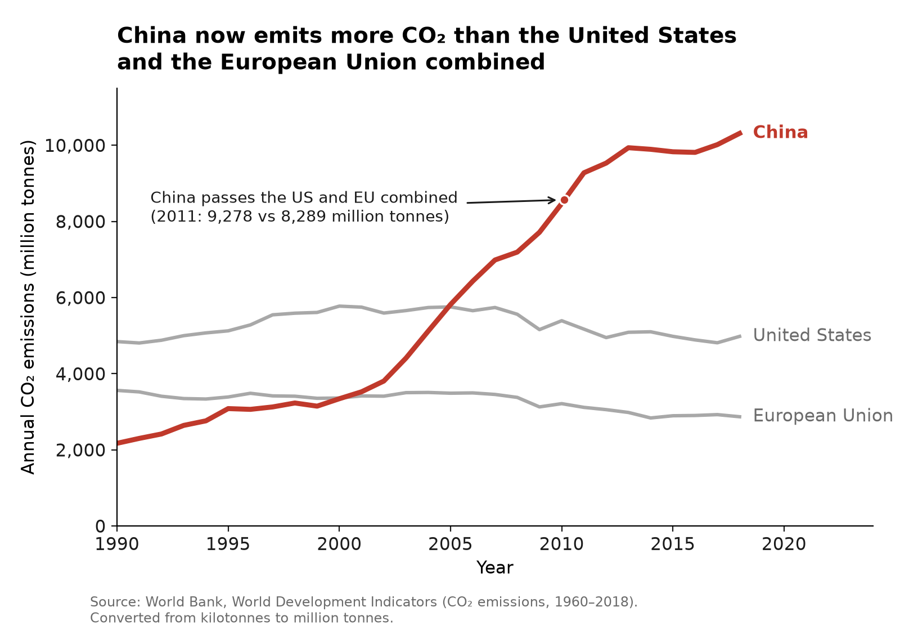
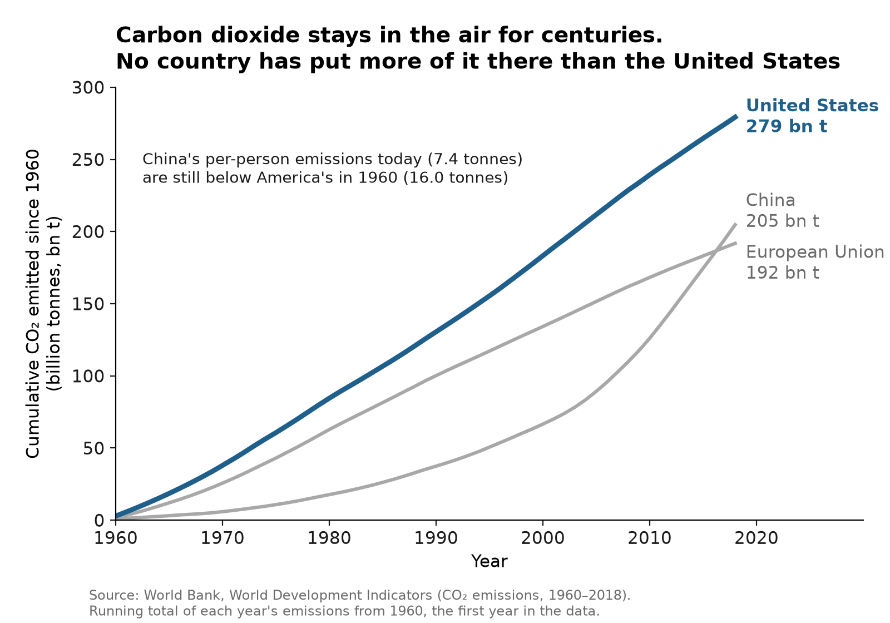

Argues it’s true
For the proposition

Design decisions and rationale
-
Absolute national totals, not per person
−2+2−1 deceptiveA country of 1.4 billion is compared with ones of 330 and 450 million as if they were the same size. Totals are what make China's line tower over the others; per person China emitted 7.4 tonnes in 2018 against 15.2 for the US, and that version would have argued the other side. We kept totals because the proposition is about who drives the crisis, and the atmosphere does count totals, which is the defensible half of the choice.
-
The window starts in 1990
−2+2−0.5 deceptiveBy 1990 US and EU emissions had already flattened, so their lines read as a steady state rather than the tail of a century of growth, while China's line starts low and climbs the whole way. Starting at 1960, the first year in the data, would add three decades where the US sits well above China, and the chart's story would arrive late. 1990 is also a common starting point for emissions accounting, so the cut doesn't look chosen.
-
The comparison is China against the US and EU combined, stated in an annotation
−2+2−0.5 deceptivePicking two rich economies and adding them together builds a benchmark that exists to be crossed. In the checkpoint we drew it as a dashed US + EU line; following feedback we removed the line, pointed the arrow at the exact crossing (2010.1, where the two series meet), and moved the numbers into the label: 9,278 vs 8,289 million tonnes in 2011. The chart is cleaner, and the claim is now checkable in the label instead of implied by a constructed line.
-
China in red, everything else in grey
−2+2−0.5 deceptiveThe colour does the arguing before the reader reads anything: one actor is highlighted and alarming, the others recede. Red also carries a warning connotation that a neutral highlight colour wouldn't. A single neutral hue for all three would have been more even-handed, but the crossover would no longer be the first thing a reader sees.
-
Y-axis from zero, both axes labelled, every line labelled directly, source and unit conversion printed on the chart
−2+2+2 earnestNothing about the scale is manipulated, which is exactly why the chart is persuasive: a reader who looks for the usual tricks finds none, so the framing choices above go unquestioned.
Argues it’s false
Against the proposition

Design decisions and rationale
-
A running total instead of yearly emissions
−2+2+0.5 earnestWe computed the cumulative sum of each year's emissions from 1960. The title's premise is true and is the strongest argument on this side: carbon dioxide stays in the atmosphere for centuries, so warming tracks the total ever emitted, not this year's output. It is the same series as the other chart, transformed once, and it reverses the ranking. We scored it slightly earnest because the measure is the one climate scientists use for responsibility, and the transformation is printed under the chart.
-
"Stays in the air for centuries," but the sum starts in 1960
−2+2−1 deceptiveThe title invites the reader to think about all of history, while the data only goes back to 1960. That gap happens to favour our side: emissions before 1960 were overwhelmingly American and European, so a longer window would widen the US lead. We still count it as deceptive, because the title promises a scope the chart doesn't deliver and most readers won't notice the axis says "since 1960."
-
The per-person annotation compares China today with America in 1960
−2+2−1 deceptive7.4 tonnes against 16.0 lands as a moral point: China in 2018 is cleaner per person than the US was sixty years ago. The honest comparison was available and almost as strong, since the US was still at 15.2 tonnes in 2018. We picked 1960 because it is more striking, and because it mixes a second measure into a cumulative chart where nobody expects one.
-
The EU shown as one bloc, and the US in blue against grey
−2+2−0.5 deceptiveTreating 27 countries as one makes the US the single largest line; split into member states, the US would lead every one by far more, so this choice actually understates our case. The blue highlight does the same work the red does on the other chart, while the calmer colour keeps this side from looking like an accusation.
-
Units spelled out, both axes labelled, axis from zero, totals labelled at each line's end
−2+2+1.5 earnestFollowing feedback, the y-axis now defines "bn t" as billion tonnes and the x-axis is labelled, so the 279 / 205 / 192 end labels can be read without guessing. As with the other chart, honest scaffolding makes the framing harder to question.